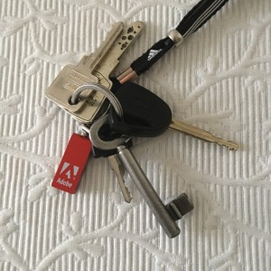
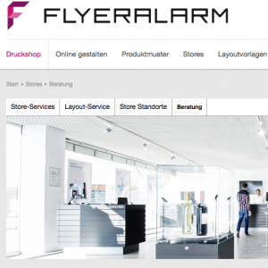

Personalisierte Werbegeschenke
Personalisierte Werbegeschenke unterstützen Kundenbindung aufzubauen und zu verstärken
Für Unternehmen aller Größenordnungen hat neben der Neukunden-Akquise der Aufbau und die gezielte Stärkung einer langfristigen Kundenbindung eine zentrale Bedeutung. Wie mir gerade vor zwei Wochen auf der CeBIT und letzte Woche auf einer Reise in Dubai nochmal in Erinnerung gerufen wurde, können dabei Werbegeschenke eine positive Rolle spielen.

Da allgemein die nachhaltige Bindung von Bestandskunden anhand der schon vorhandenen Kundendaten wesentlich zielgerichteter erfolgen kann als die Ansprache von Neukunden mit auf Breitenwirkung ausgelegten Werbekampagnen, können gerade kleine und mittlere Unternehmen die Möglichkeit nutzen, mit kreativen, personalisierten Werbegeschenken die Beziehung zum Bestandskunden zu festigen und neue Impulse für wiederholte Kaufentscheidungen bzw. Inanspruchnahmen von Dienstleistungen auszulösen. Aus meiner eigenen Erfahrungen heraus, kann ich diese Sichtweise nur bestätigen. Über kleine Werbegeschenke mit „Pfiff“, Humor oder Hochwertigkeit freue ich mich und beachte dann auch, von wem und mit welcher Botschaft sie überreicht/verteilt werden. Aber ich weiß auch, es nicht leicht, anders als alle anderen zu sein. Letzte Woche z.B. auf einer Geschäftsreise nach Dubai habe ich an einem Tag von drei Firmen ein Power-Pack geschenkt bekommen. Über das erste Powerpack habe ich mich noch gefreut……Allerdings habe ich auch Parfüm mit meinem Namen auf der Packung bekommen und da fühlte ich mich sehr wertgeschätzt. Aber auch die bedruckten Smarties, die ich von einer Kollegin auf der CeBIT bekommen habe, waren eine nette und außergewöhnliche Idee und eine willkommene Stärkung auf der Messe. Auch wenn USB-Sticks nicht mehr wirklich was Außergewöhnliches sind, habe ich mich über die äußerlich sehr kleine und hübsche Version (dennoch 16 GB Speicherplatz) von Adobe, überreicht auf einer Road-Show in Hamburg gefreut. Ich habe schon den ein oder anderen Stick verloren und dieser ist hübsch klein und gut am Schlüsselbund zu befestigen.Effektive Werbung mit kreativen Werbeartikeln
Wie mir der Werbeartikel-Monitor 2015 der Dima-Marktforschung GmbH gezeigt hat, verwenden rund 48 Prozent der kleinen und etwa 40 Prozent der mittleren Unternehmen mehr als 20 % ihres Werbeetats für die Anschaffung und Verbreitung von Werbeartikeln. Personalisierte Werbegeschenke können – besonders bei wiederholter Benutzung – einen sehr nachhaltigen Werbeeffekt erzielen. Diese Form von Werbeartikeln sind nicht nur allgemein imagefördernd und vertrauensbildend, sondern steigern auch den Bekanntheitsgrad des Unternehmens. Wie ich schon selber festgestellt habe, überträgt sich in vielen Fällen die Qualität eines sorgfältig ausgewählten Werbeartikels gedanklich auf die Produkte und Dienstleistungen des werbenden Unternehmens. Damit kann gezielt eine langfristige Kundenbindung aufgebaut werden, die auf positiven Emotionen und Vertrauen beruht. Kreative Werbegeschenke lassen sich gezielt und kostengünstig einsetzen, zumal eine personalisierte Ansprache von Bestandskunden wesentlich effektiver ist als die breite Streuung von Werbeartikeln an einen undefinierten Kreis potentieller Neukunden. Da zudem viele Werbeartikel ein vorteilhaftes Preis-Leistungs-Verhältnis aufweisen, lassen sie sich kostengünstig als Marketinginstrument einsetzen.
Anforderungen an eine zielgerichtete Kundenansprache mit Werbegeschenken

Wer Neukunden gewinnen und die Bindung von Bestandskunden verstärken will, sollte über die Verwendung von Giveaways wie Kugelschreibern und Einkaufstaschen, wie ich sie besonders auf Messeständen häufig sehe, hinausgehen. Bestandskunden wollen persönlich angesprochen werden. Daher ist es wichtig, auf personalisierte Werbeartikel zu setzen. Neben der Kundenansprache mit persönlich adressierten Werbepublikationen können Sachgeschenke mit individuell gestalteten Stickern, Aufklebern und Etiketten versehen werden, sodass sich der (Bestands-)kunde individuell angesprochen und wertgeschätzt fühlt. Solche Aufkleber lassen sich sehr passend auf Geschenken wie Weinflaschen, Schokoladentafeln oder Kalendern platzieren. Dies erhöht den Wiedererkennungswert nachhaltig. Besonders Werbeartikel wie Notizblöcke, Schreibunterlagen und Wandkalender, die täglich benutzt werden, eignen sich in personalisierter Form als ideale Mittel zur Kundenbindung mit nachhaltig wirkendem Wiedererkennungswert. Spezialisierte Anbieter wie Flyeralarm bieten ein breites Angebot an Aufklebern oder Etiketten mit denen die Werbegeschenke beklebt werden können. Zu meiner eigenen Überraschung (ich dachte bisher, diesen Anbieter gibt es nur online) konnte ich in Hamburg einen großen Shop von Flyeralarm finden, in dem man sich inspirieren und beraten lassen kann.Beispiele kreativer Werbemaßnahmen
Der Werbeeffekt von Geschenken lässt sich aus meiner Sicht vor allem dann steigern, wenn sie von einer persönlichen Ansprache begleitet werden. Erfahrungsgemäß haben persönliche Briefe und Coupons eine deutlich höhere Responsequote als unpersönliche, breit gestreute Werbeartikel. Werbegeschenke sollten ein leicht erkennbares, unübersehbares Firmenbranding – idealerweise im Corporate Design – aufweisen, da dieses den Wiedererkennungswert nachhaltig erhöht und einen emotionalen Bezug zum werbenden Unternehmen herstellt. Eine Ausnahme gilt allenfalls bei extrem hochwertigen Werbegeschenken wie Ledertaschen, Koffern und hochwertigen Weinen. Hier schätzen gerade wichtige Kunden nicht, wenn der Charakter eines hochwertigen Geschenks als Werbegeschenk äußerlich erkennbar hervortritt. Stattdessen sollten solche hochwertigen Geschenke entweder persönlich überreicht oder von einem persönlichen Anschreiben begleitet werden.
Tipps zur Organisation für personalisierte Werbegeschenke:
- Starten Sie, insbesondere vor großen Events rechtzeitig (5-6 Monate vorher) mit der Auswahl und Bestellung der Werbegeschenke
- Beziehen Sie mehrere Mitarbeitern bei der Auswahl ein, insbesondere die, die die Geschenke überreichen und häufigen Kundenkontakt haben
- bei größeren Geschenken: vermerken Sie in Ihrem CRM/Kundendatei, was Sie wem geschenkt haben, um Wiederholungen zu vermeiden
Fazit: Wenn Sie sich wirklich Mühe geben mit der Auswahl Ihrer Werbegeschenke, können Sie einen sehr positiven Eindruck hinterlassen und nachhaltig die Beziehung zu Ihren Kunden stärken. Unter Zeitdruck ist selten Kreativität möglich, daher gilt rechtzeitig mit der sorgfältigen Auswahl von personalisierten Werbegeschenken beginnen.
Weitere Artikel

Puffer sichern Flow
Es wird allerhöchste Zeit, sich von der Idee, dass nur wer am Limit arbeitet, effizient sei, zu verabschieden. Unter Volllast, ganz ohne Puffer zu arbeiten ist eine „gute“ Voraussetzung für Unzuverlässigkeit, Fehler …

Die Kollaboration in einem internationalen Team organisieren
Für erfolgreiche Kollaboration im Team sind viele Bausteine nötig. Natürlich müssen alle das Ziel kennen, der Teamspirit muss stimmen, aber es muss auch die tägliche Zusammenarbeit im Team „flutschen“. Das heißt, die …